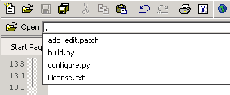
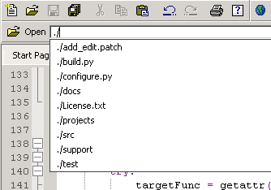
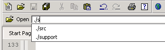
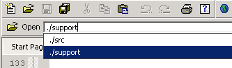
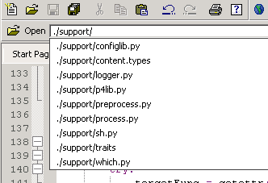
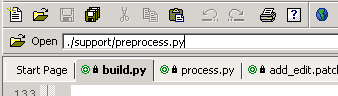

Click in the Open field to position the
cursor. Enter a period to display the files in the directory
where the current file is stored.

Enter a frontslash to display directories.

Enter characters to filter the display.

Use the arrow keys to navigate the list.

Enter a frontslash after a directory to display the directory
contents.

Select the desired file from the list. Press 'Enter' to
update the Open field, and 'Enter' to open
the file in the Editor Pane.